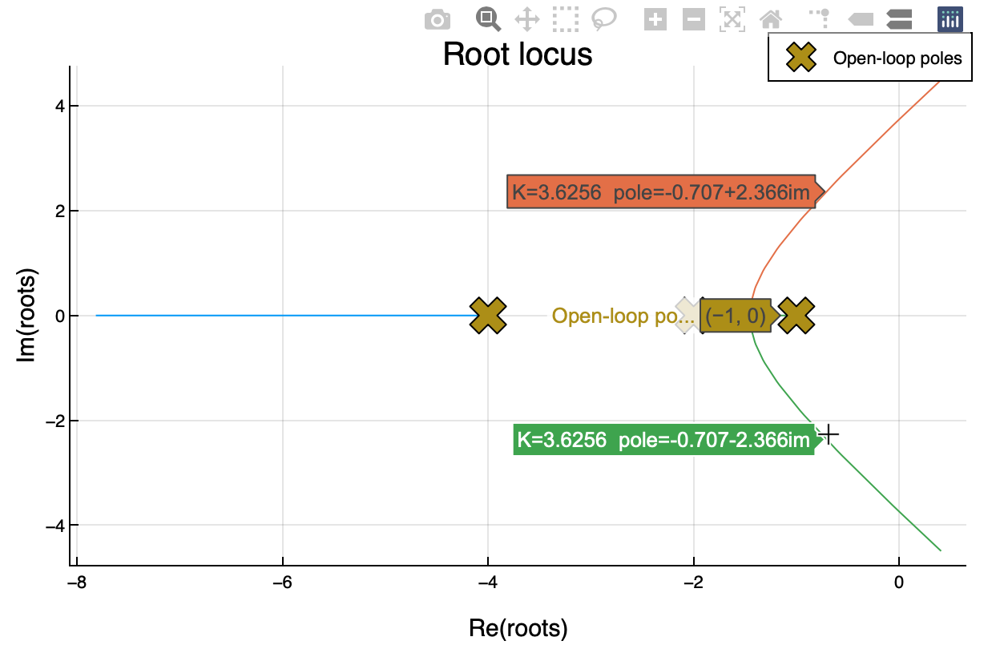

Problema 8.10#
Trazar el lugar de las raices para el control proporcional de un sistema de tres etapas con constantes de tiempo 1, 0.5 y 0.25 min, ganancia de proceso \(K_p=1\) y medidor \(H=1\). Determinar la estabilidad para los valores de \(K_c\) siguientes: 0.1, 10 y 15. ¿Qué valores tendrán el margen de ganancia y de fase para cada uno de esos tres casos?
Solución
Gráfico del lugar de las raíces
El lazo de control propuesto es:
Show code cell source
using PyCall, LaTeXStrings
schemdraw = pyimport("schemdraw")
dsp = pyimport("schemdraw.dsp")
d = schemdraw.Drawing(unit=1, fontsize=12)
d.add(dsp.Arrow().right())
comp = d.add(dsp.Mixer(W="+", S="-").anchor("W"))
d.add(dsp.Arrow().at(comp.E).right())
control = d.add(dsp.Box(h=1, w=1.5).label(L"K_c").anchor("W"))
d.add(dsp.Arrow().right().at(control.E))
proc1 = d.add(dsp.Box(h=1, w=1.5).label(L"\frac{1}{s+1}").anchor("W"))
d.add(dsp.Arrow().right().at(proc1.E))
proc2 = d.add(dsp.Box(h=1, w=1.5).label(L"\frac{1}{0.5s+1}").anchor("W"))
d.add(dsp.Arrow().right().at(proc2.E))
proc3 = d.add(dsp.Box(h=1, w=1.5).label(L"\frac{1}{0.25s+1}").anchor("W"))
d.add(dsp.Line().at(proc3.E).right())
dot = d.add(dsp.Dot(radius=0))
d.push()
d.add(dsp.Arrow().at(dot.center))
d.pop()
d.add(dsp.Line().down().at(dot.center).length(1.5))
d.add(dsp.Arrow().left().length(5))
sensor = d.add(dsp.Box(h=1, w=1.5).label(L"H").anchor("E"))
d.add(dsp.Line().at(sensor.W).tox(comp.S).left())
d.add(dsp.Arrow().up().to(comp.S))
d.draw(show=false)

Por tanto, su ecuación característica es:
Operando se encuentra:
Para dibujar el lugar de las raíces hay que encontrar las raíces de la ecuación anterior para diferentes valores de \(K_c\) y representarlas en el plano complejo.
Empezaremos cargando las librería necesarias y creando las variables que utilizaremos:
using SymPy, Plots
#plotly()
@vars s
t, Kc = symbols("t K_c", real=true)
(t, K_c)
Tal como se indicaba más arriba, la función de lazo abierto es:
Gol_s = Kc*1/(s+1)*1/(.5s+1)*1/(.25s+1)
Las raíces de la ecuación característica en función de \(K_c\), un polinomio de trecer grado tiene solución analítica:
rl = solve(1+Gol_s, s)
Para poder trabajar con la función de una manera más sencilla, vamos a convertirla en una función de Julia:
raiz = lambdify(rl)
#103 (generic function with 1 method)
Comprobamos que funciona calculando las raíces para \(Kc=3\):
raiz(3)
3-element Vector{Number}:
-0.7432742592131494 + 2.2916217498187774im
-0.7432742592131494 - 2.2916217498187774im
-5.513451481573702
Dibujaremos las raíces de la ecuación característica para valores de \(K_c\) entre 0 y 20:
# Definimos los valores de Kc para los que representaremos el lugar
#de las raíces
K = range(0, 20, step=.1)
lreal = []
limag = []
# En este bucle, en primer lugar encontramos las raíces para
# cada valor de Kc
# En el segundo
for k in K
root = raiz(Complex(k))
for i in root
push!(lreal, real(i))
push!(limag, imag(i))
end
end
scatter(lreal, limag, legend=false, xlabel="Re", ylabel="Im")

Dibujar el gráfico del lugar de las raíces no es complicado, pero sí es un poco laborioso. Una opción más simple, es utilizar la biblioteca ControlSystems.jl, que dibujar el lugar de las raíces utilizando métodos numéricos:
using ControlSystems
# Definimos la variable s
s = tf("s")
# Representación del lugar de las raíces para Gol para
# valores de Kc entre 0 y 20
rlocus(1/(s+1)*1/(.5s+1)*1/(.25s+1), K=20)
Pasando el ratón sobre las curvas, se puede leer los valor de la raices y el valor de la ganancia del controlador:

Estudio de estabilidad para los valores de \(K_c\) siguientes: 0.01, 10 y 15
Resolviendo la ecuación característica se puede construir la siguiente tabla:
Show code cell source
using Markdown
Kcs = [0.01, 10, 15]
tabla = "| _Kc_ | raíces\n------|-------"
for kc in Kcs
raices = raiz(kc+0im)
for j in 1:3
if j == 1
kc_print = string(kc)
else
kc_print = ""
end
if real(raices[j]) > 0
negrita = "**"
else
negrita = ""
end
tabla = tabla* "\n| " * kc_print * " | "* negrita * string(round(raices[j], digits=3)) * negrita
end
end
#tabla = tabla * "\""
println(Markdown.parse(tabla))
| *Kc* | raíces |
| ----:| -------------------:|
| 0.01 | -1.959 - 0.0im |
| | -1.028 + 0.0im |
| | -4.013 + 0.0im |
| 10.0 | -0.082 + 3.587im |
| | -0.082 - 3.587im |
| | -6.835 + 0.0im |
| 15.0 | **0.217 + 4.144im** |
| | **0.217 - 4.144im** |
| | -7.433 + 0.0im |
Se comprueba que dos de las raíces para \(K_c = 10\) tienen la parte real positiva.
A partir del gráfico del lugar de las raíces también se podría haber obtenido la tabla anterior.
Margen de ganancia y de fase
Al conocer la ganancia última del controlador proporcional (\(K_u = 11.3\)), el cálculo del margen de ganancia resulta trivial:
Por tanto:
\(K_c\) |
MG |
|---|---|
0.01 |
1130 |
10 |
1.13 |
15 |
0.753 |
También se puede calcular el margen de ganancia mediante análisis de frecuencia. Para ello hay que conocer la razón de amplitudes y el desfase de la función de transferencia de lazo abierto:
En primer lugar hay que encontrar la frecuencia de cruce (\(\varphi_{OL}(\omega_{co}) = - \pi\)). Tras resolver la ecuación se obtiene que \(\omega_{co} = 3.74 \text{ rad/min}\). Sustituyendo en la razón de amplitudes y fijando el límite de estabilidad (\(RA_{OL}(\omega_{co}) = 1\)), se obtiene: